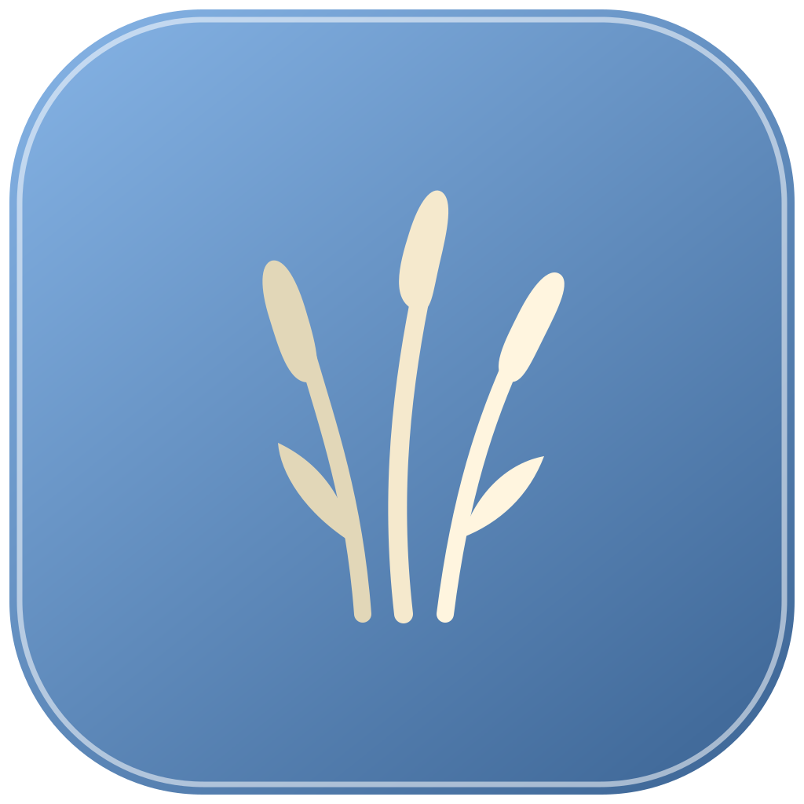

梳理产品思路
梳理需求与用户反馈，明确本周迭代方向与优先级。
应用历史
Dayreed梳理需求与用户反馈，明确本周迭代方向与优先级。
应用历史实现核心功能模块，优化交互细节与性能表现。
应用历史 · 截图整理今日工作成果，记录问题与收获，规划明日计划。
应用历史9 月 6 日 · 工作回顾
今天梳理了产品方向，完成核心界面的构建，并留出时间回看交互中的细节。
记录的意义，是让下一次开始更从容。明天继续完善回顾流程，让信息回到它应在的位置。
在 App 中可编辑 Markdown；重新生成先审阅候选。8 月 31 日 — 9 月 6 日
从需求整理到核心体验，再到细节修订。把值得保留的思考，带入下一周。
在 App 中按本机时区回顾整周，也可以手动编写报告。演示数据 · 功能示意，非真实截图 点击切换，感受回顾的不同视角
01 / 为自己留下记录
截图与应用历史，由你独立选择。
时间线串起工作片段，
日报和周报留住思考。
像芦苇一样，
在自己的节奏里生长。
截图和应用历史独立选择，窗口标题与辅助功能文本也由你控制。随时暂停，为不想记录的应用留白。
回到时间线，纠正活动标题与摘要；将想法写进日报、周报。重新生成先产生候选，由你决定是否替换。
让你正在使用的 Agent 读取时间线与报告。接口只读，不提供修改或原始证据工具；App 内不另设 Chat。
本地存储，无需账号。
没有遥测，也没有多设备同步。
仅向你选定的 Provider
发送启用来源，自动分析默认关闭。
为 macOS 26 的
Liquid Glass 而生。
正式制品仅来自本仓库 Releases。当前功能仍在持续验证和完善。